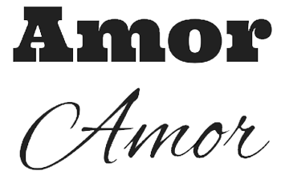

Você se lembra de que falamos no capítulo anterior que as cores podem transmitir emoções? Pois as fontes também possuem essa mesma capacidade. E se você é uma pessoa atenta, vai entender que quando somamos essas emoções, podemos ter resultados ainda mais fortes. Para entender mais sobre as fontes, precisamos estudar os fundamentos básicos da tipografia, que é uma arte antiga que estuda técnicas de escrita (do Grego, graphía) para a apresentação de forma impressa (do Grego, týpos). Essa preocupação surgiu na época em que as grandes prensas físicas eram usadas para produzir livros/jornais. Os tipos móveis são aquelas peças de metal/madeira/argila (ao lado) que são usados para “carimbar" o papel e fazer as letras.
E o mundo da tipografia se inicia em 1450, com o inventor Alemão Johannes Gutenberg (foto ao abaixo), criador da prensa mecânica de tipos móveis. Na verdade, os Chineses foram os primeiros a criarem o conceito de prensa com tipos móveis, mas Gutenberg acabou sendo reconhecido como aquele que deu início à Revolução da Imprensa. Antes disso tudo, cada exemplar de um livro era reproduzido através de material manuscrito devidamente copiado, palavra por palavra, até atingir o resultado desejado.
Fonte, letra e família Glifos, letras, caracteres São os signos alfabéticos projetados para reprodução mecânica. O exemplo a seguir representa os glifos de a até h.
É o conjunto de glifos que possuem as mesmas características anatômicas, independente das suas variações. Vou exemplificar esse conceito com o exemplo a seguir: a família tipográfica Open Sans possui várias configurações de peso (de 300 a 800). Mesmo parecendo representações bem diferentes, todos eles fazem parte da mesma família tipográfica
No capítulo anterior nós falamos sobre a importância de escolher uma boa paleta de cores para o nosso projeto. Também precisamos saber escolher as famílias tipográficas que utilizaremos em um site. As fontes também podem passar emoções. Vamos a um exemplo? Imagine que eu tenha que representar a palavra “amor” através de uma determinada tipografia. Qual das opções abaixo você escolheria?
Com toda certeza, a maioria das pessoas escolheria a segunda opção. Sabe o por quê? A palavra “amor” tem mais a ver com uma representação mais suave e fluida, não algo mais robusto e forte. E mesmo sem te dizer isso, provavelmente a escolha do tipo fez isso por mim. O problema é que a escolha não é tão simples assim. Na representação acima, com uma palavra curta e isolada, conseguimos ler facilmente a palavra “amor” em qualquer uma das opções de fontes escolhidas. Chamamos isso de legibilidade. Mas basta colocarmos uma frase maior para as coisas ficarem um pouco confusas.
No exemplo anterior, mesmo que todas as palavras tenham uma legibilidade razoável (até dá pra entender), a leiturabilidade não é tão boa assim. Essa segunda característica diz respeito à fluidez que conseguimos ter na leitura
Sendo assim, escolher um bom tipo é essencial para cada caso. Não povoar nosso site com tipos diferentes também é uma ótima ideia. No máximo dois ou três tipos já
estaria ótimo. Vamos conhecer agora algumas características anatômicas dos tipos para nos ajudar a escolher boas fontes para nosso site.
Vamos analisar cada uma das partes de um tipo. Volte sempre para essa página ao ler a descrição de cada elemento: